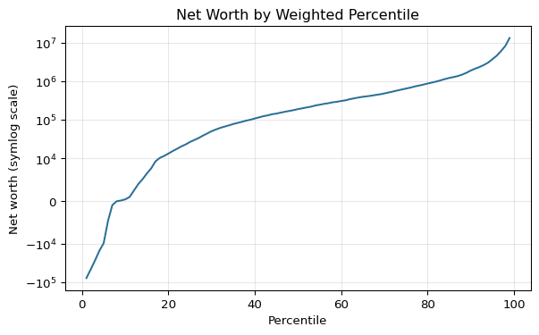

| Measure | P10 | Median | P90 | |
|---|---|---|---|---|
| 0 | Household income | $20,537 | $70,259 | $248,610 |
| 1 | Net worth | $450 | $192,700 | $1,936,762 |
| 2 | Total assets | $9,248 | $331,467 | $2,117,000 |
| 3 | Total debt | $0 | $31,732 | $340,000 |
SCF 2022: Interesting Results
Notes
This report uses the SCF 2022 public data in SCFP2022.csv and applies the SCF household weight (WGT) for all estimates. Variable labels follow SCF naming; when in doubt, consult the SCF codebook for exact definitions of indicator variables and group codes (e.g., AGECL, EDCL, RACECL4).
| Group | Share of net worth | |
|---|---|---|
| 0 | Bottom 50% | 2.2% |
| 1 | Middle 40% (50-90) | 24.4% |
| 2 | Top 10% | 73.4% |
| 3 | Top 1% | 35.1% |
| Indicator | Share of households | |
|---|---|---|
| 0 | Homeowner (HHOUSES/HOUSECL) | 66.1% |
| 1 | Has any debt (HDEBT) | 77.4% |
| 2 | Has checking account (HCHECK) | 91.1% |
| 3 | Has savings account (HSAVING) | 51.4% |
| 4 | Has liquid assets (HLIQ) | 98.6% |
| 5 | Has retirement accounts (HRETQLIQ) | 54.3% |
| 6 | Has directly held stocks (HSTOCKS) | 21.0% |
| 7 | Has bonds (HBOND) | 1.1% |
| 8 | Has a business interest (HBUS) | 14.6% |
| 9 | Has credit card balance (HCCBAL) | 45.2% |
| 10 | Has education installment loans (HEDN_INST) | 21.7% |
| 11 | Has vehicles (HVEHIC) | 86.6% |
| 12 | Has primary mortgage (HPRIM_MORT) | 40.6% |
| 13 | Has second mortgage (HSEC_MORT) | 1.2% |
| Measure | Median | |
|---|---|---|
| 0 | Debt among households with debt | $80,220 |
| 1 | Home equity among homeowners | $200,000 |
| 2 | Retirement account balance among holders | $87,000 |
| 3 | Direct stock holdings among holders | $15,000 |
| 4 | Liquid assets among holders | $8,000 |
| 5 | Credit card balance among households with bala... | $2,700 |
| 6 | Debt-to-income ratio among households with debt | 0.95 |
- Median household income is $70,259 (10th percentile $20,537, 90th percentile $248,610).
- Median net worth is $192,700 (10th percentile $450, 90th percentile $1,936,762).
- 7.5% of households have negative net worth.
- The top 10% hold 73.4% of net worth; the top 1% hold 35.1%; the bottom 50% hold 2.2%.
- Homeownership rate is 66.1%.
- 77.4% of households have some debt.
- 54.3% of households have retirement accounts.
- 21.0% of households hold directly owned stocks.
- 45.2% of households carry a credit card balance.
- 21.7% of households have education installment loans.
Age Group Patterns
Education Patterns
Race/Ethnicity Patterns (SCF Codes)
Charts


Appendix: Data Coverage
| Total weighted households (sum of WGT) | |
|---|---|
| 0 | 131,306,389 |